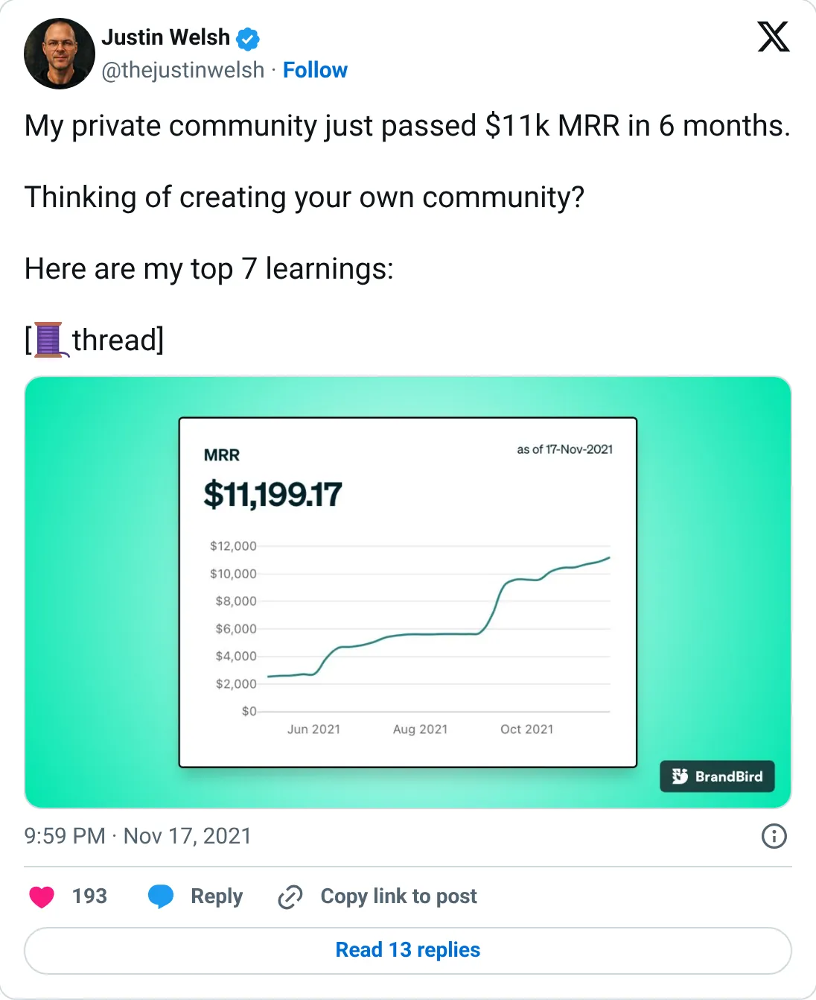
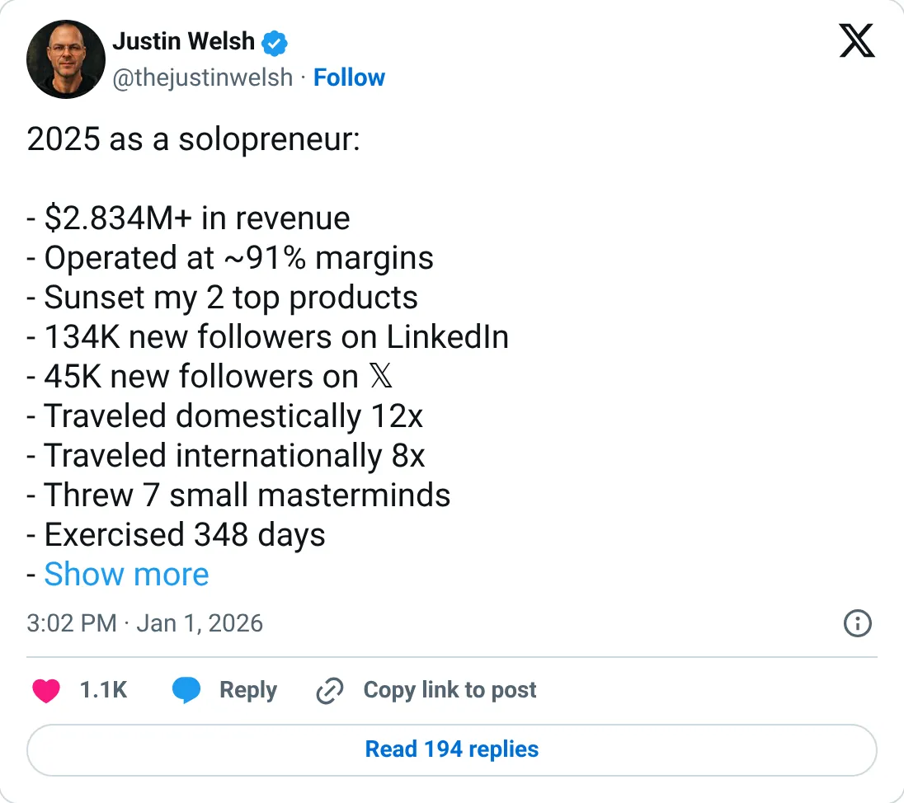

Not a pick
Justin Welsh (solopreneur business)
A real-looking company with a headline you should not plan against.
$236K / month avg (2025)
Should you build this
The company may be real. The figure on the card is a peak, a stale year, a cash month, or an average. Justin Welsh's $236K a month is a 2025 average: $2.834M for the year, about 91% margins, self-reported. Inside that year, November alone was $1,043,516, and he said 60% of it was partner deals. That is a media spike, not monthly recurring software revenue. The report also says he shut down three of his four top streams and is retooling for 2026. The money in 2025 was probably real. Sitting it on a leaderboard next to Stripe MRR, as if the average were still running, is the showoff.
Cited from the captured posts, shown below: the earliest captured post (Nov 17, 2021) is the source for “His private community passed $11K MRR in 6 months”; the latest milestone (Jan 1, 2026) is the source for “2025: $2.834M revenue in total (≈$236K/month average), ~91% margins”.
Posts this is based on

His private community passed $11K MRR in 6 months
Open on X

2025: $2.834M revenue in total (≈$236K/month average), ~91% margins
Open on X
What the product is
One-person education business: LinkedIn/creator courses, a newsletter, subscriptions and partner deals, run at ~90% margins without employees.
⚠ Older: the headline is the 2025 monthly average. He shut down 3 of his 4 top revenue streams and is retooling for 2026.